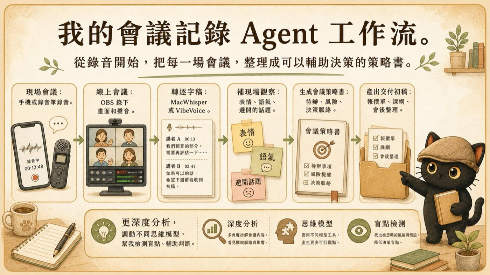
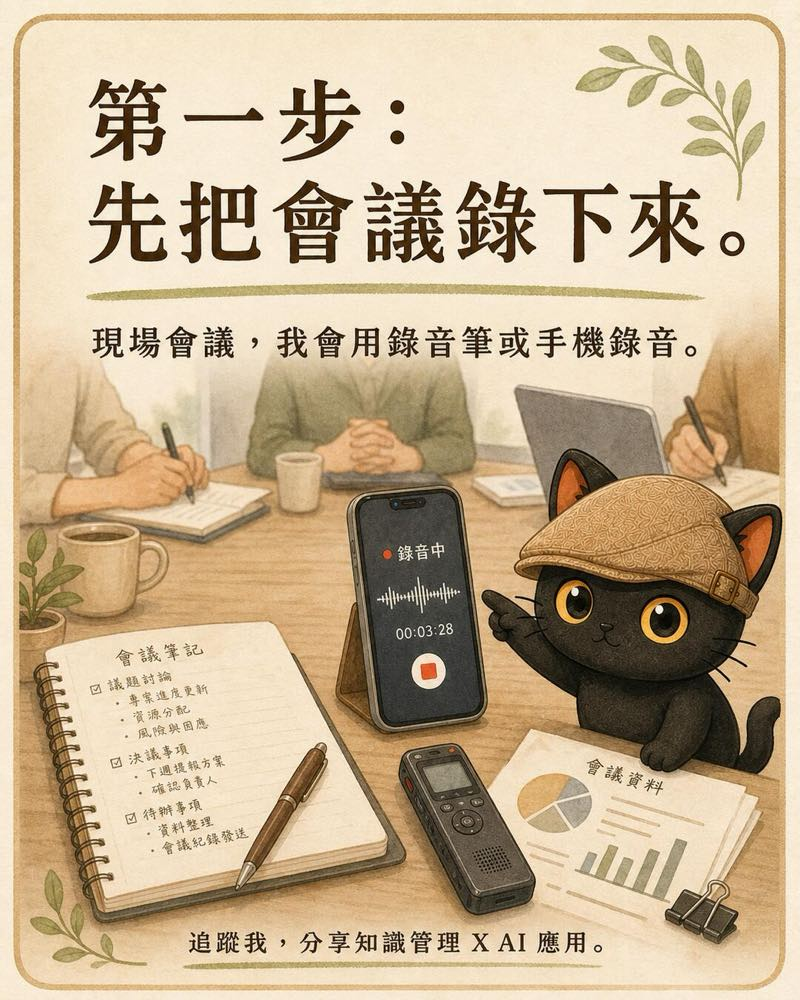
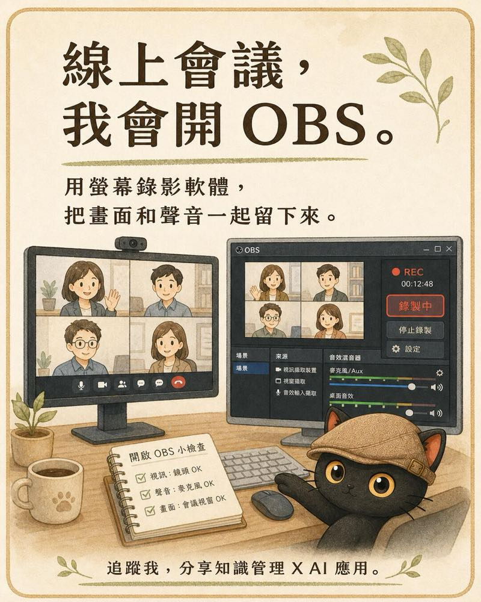
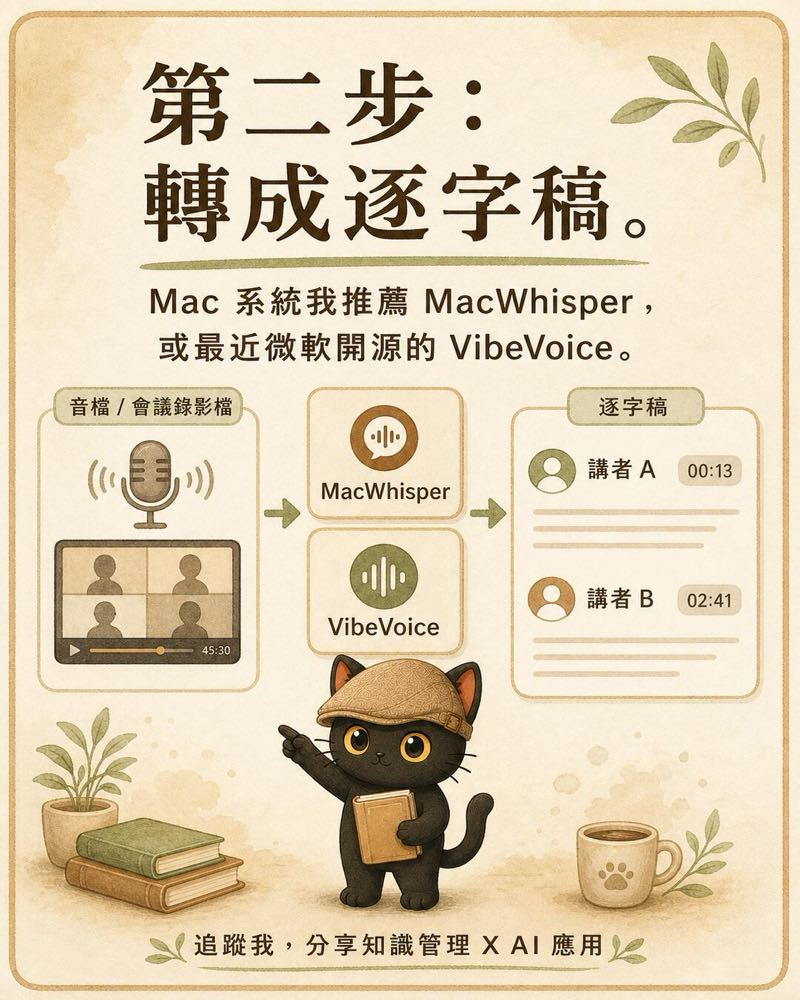
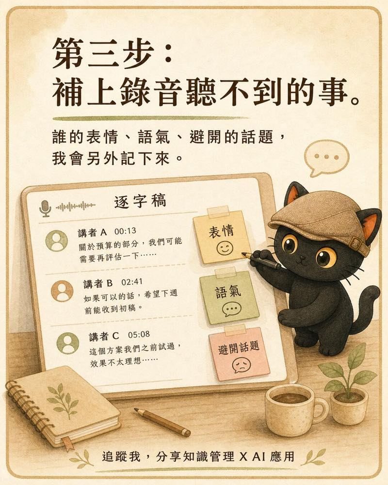
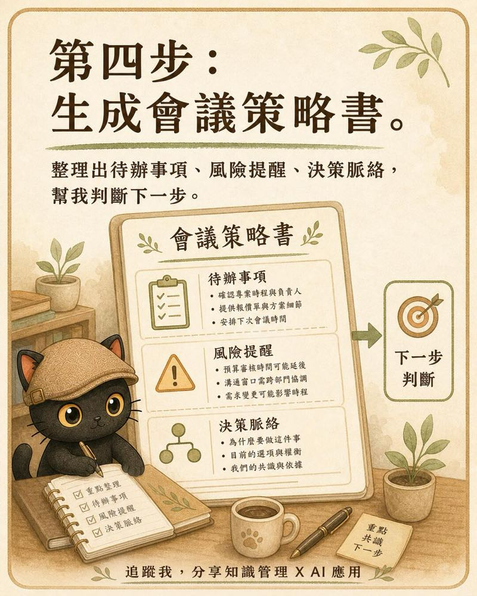
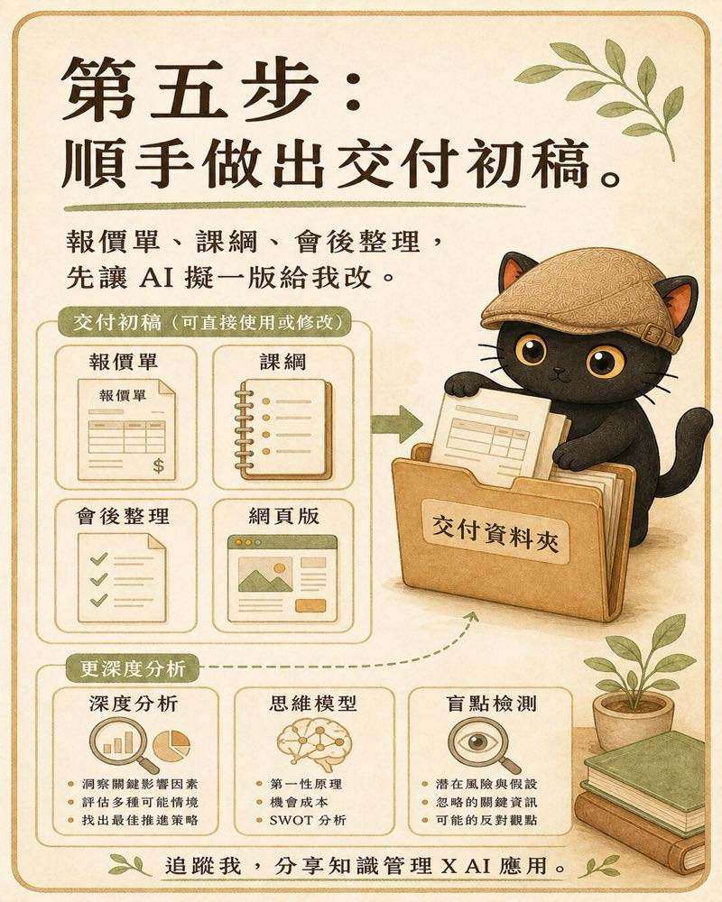

I'll share how I handle a meeting: first I keep a complete recording, then turn the audio into a transcript with speakers and timestamps, add the expressions, tone, and atmosphere in the room, and finally hand it to the AI to organize into action items, risks, decision context, and first-draft deliverables. The end point of the whole workflow is a meeting strategy report I can keep analyzing, use to check for blind spots, and lean on for the next call.
- People who record their meetings but end up keeping only a transcript they rarely revisit
- People who commit to a lot during meetings and then have to redo quotes, course outlines, or first-draft proposals afterward
- People who want AI to help analyze meetings but worry it will miss the tone, expressions, and relationships in the room
- People who want every meeting to accumulate into a knowledge asset they can query and use for decisions later
- A seven-step workflow from recording and transcription through to strategic analysis
- A checklist of meeting materials you can hand straight to an AI
- Three reusable prompts: the strategy report, the first-draft deliverable, and the blind-spot check
- The limits of this method, plus reminders on recording consent and data security

Why a transcript still isn't enough
A transcript can tell you who said what and when, but it struggles to answer what to do next.
- What did this meeting actually commit to in the end?
- Which issues already have consensus, and which were just skipped over for now?
- Which remark changed the direction or the mood in the room?
- Which risks have already surfaced that no one has named out loud yet?
- What should I deliver next, and which item comes first?
Record the whole meeting first
In-person meetings
For in-person meetings I use a voice recorder or my phone. Place it as close to the main conversation as possible, avoid burying it in a bag, and watch out for desk bumps, air-conditioning noise, and pickup problems caused by too much distance.
Before you start, it's worth confirming storage space, battery, and that recording is actually running. For important meetings you can prepare a second source, for example a voice recorder as the primary file and a phone as backup.

Online meetings
For online meetings I use OBS to record the screen and the audio. The first time you use it, run a 30-second test to confirm that both your voice and the other party's voice are captured before you start the real meeting.

Turn it into a transcript with speakers and timestamps
I want the transcription tool to leave at least three things: who said it, at what minute and second, and what was actually said.
Mac users can consider MacWhisper. It supports timestamps and speaker recognition. Another route is Microsoft's open-source VibeVoice-ASR, which combines speech recognition, speaker separation, and timestamps into a structured output; it suits people willing to install the model themselves and manage a local compute environment.
Once it's done, you still need to spot-check names, proper nouns, numbers, and speaker labels by hand. When several people talk at once, the room is noisy, or the microphone is too far away, recognition is more prone to errors.

After transcription, spot-check four places first
- The opening: confirm no segment of the recording is missing.
- Key decision segments: confirm the numbers, dates, and commitments are correct.
- Fast multi-person exchanges: confirm the speakers aren't mislabeled.
- The closing: confirm the final division of tasks and delivery deadlines were captured.
Tool references: MacWhisper speaker recognition guide ↗, Microsoft VibeVoice GitHub ↗
Add the on-the-ground observations the recording can't capture
The recording preserves the words; on-site notes fill in the context. In important meetings, I separately note who changed their expression or tone before or after a certain topic, which question got brushed past quickly, which remark shifted the mood in the room, and who volunteered a commitment versus who held back.

Separate fact from judgment
"The other party paused for five seconds after hearing the budget" is an observation; "the other party thinks the price is too high" is a guess. Mix the two together and the AI will easily write your guess up as fact.
- Observation: a concrete behavior you saw or heard.
- My guess: a current interpretation that needs later confirmation.
- To confirm: a question to ask the other party directly next time.
Preserve the raw material, then organize a readable version
Save the original recording and the original transcript first. Later cleanup can choose how much to keep based on purpose.
- Quick version: keep 10 to 20 percent, good for when you only want conclusions, action items, and deadlines.
- Detailed version: keep 30 to 50 percent, good for ordinary working meetings and later handovers.
- Extra-detailed version: keep 70 to 90 percent, good for consulting meetings, needs interviews, or important decisions.
- Verbatim version: keep almost everything, correcting only obvious typos, speaker labels, and punctuation.
Generate a meeting strategy report that supports decisions
A meeting strategy report can be split into three layers: first let people act, then help them judge, and finally preserve the full context.
- Immediate action: decisions, action items, owners, deadlines, and the deliverables I committed to.
- Decision support: risks, issues not yet aligned, assumptions that lack evidence, and questions to confirm next time.
- Full context: the discussion organized in chronological order, keeping speakers and timestamps.

A prompt you can use directly
Turn meeting commitments into first-draft deliverables
What you promised the other party in the meeting, such as a quote, a course outline, a post-meeting summary, or a proposal structure, can be drafted into a first version by the AI based on the meeting evidence.
This step has to separate "what the other party explicitly asked for" from "what the AI suggests adding." The former is a delivery requirement; the latter is only candidate content. Before you send anything officially, a person still has to confirm the price, scope, dates, commitments, and tone.

Use different thinking models for deeper analysis and blind-spot checks
The point of this step is to let the AI give deeper analysis, calling on different thinking models to help me check for blind spots so I can make better judgments.
- Risk angle: what delay, cost, commitment, or relationship risks are there?
- Stakeholder angle: are the things different participants care about aligned?
- Opportunity and leverage angle: which work is worth investing in, and which can be handed to a system or an AI?
- Counter angle: if the current judgment is wrong, which assumption is most likely the mistake?
- Evidence angle: which conclusions are backed by original words and timestamps, and which are still guesses?
For one important meeting, keep seven kinds of files
- The original recording or video.
- The original transcript with speakers and timestamps.
- On-the-ground observation notes.
- The reading version organized by purpose.
- The meeting strategy report.
- The quote, course outline, or other first-draft deliverables.
- The deep analysis and the list of questions to confirm.
It's best to keep these files in the same meeting folder, with the date and meeting topic preserved in the filenames. Whether you later look back at a commitment, prepare for the next meeting, or hand it to another AI, you can find the same set of evidence.
Common pitfalls
Only a recording, no on-the-ground observations
The AI ends up missing cues about expressions, pauses, mood, and interaction. For important meetings, add at least a short observation note.
A transcript with no timestamps
The analysis looks complete but is hard to verify against the original recording. Keep speakers and timestamps at transcription time.
Treating the AI's guess as the other party's stance
Any judgment about psychology, attitude, or intent should be marked as a guess, with the evidence that supports or refutes it listed.
Sending the first-draft deliverable straight out
The AI may add scope, numbers, or dates the meeting never confirmed. Before sending, check each commitment, amount, deadline, and boundary of responsibility item by item.
The minimum way to start
You don't have to build the whole system at once the first time. Pick one important meeting and finish four things.
- Record it.
- Turn it into a transcript with speakers and timestamps.
- Add five lines of on-the-ground observations.
- Use the strategy-report prompt from this article to organize action items, risks, context, and questions to confirm.
Want to build your own meeting workflow?
I run two free online talks every month, sharing practical methods for using AI as a thinking partner, and for distilling knowledge and experience into prompts, Skills, and knowledge bases. If AI and knowledge management, or surfacing tacit knowledge, sounds like your thing, start with the community.
Two free sessions every month.
Join the LINE Community ↗